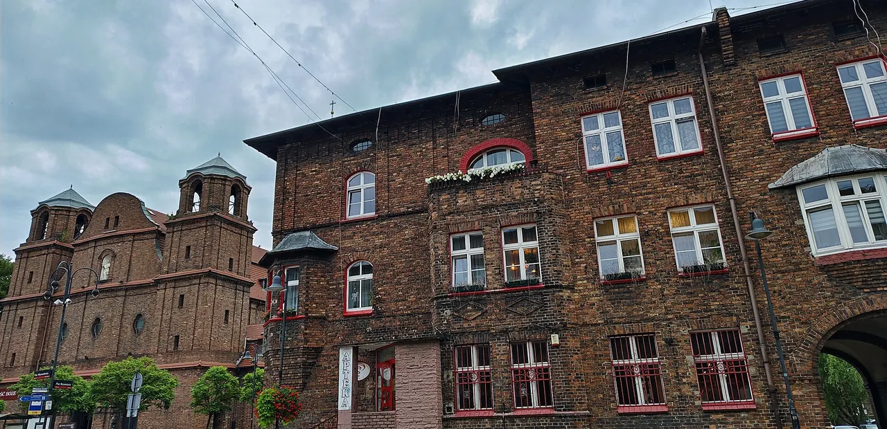
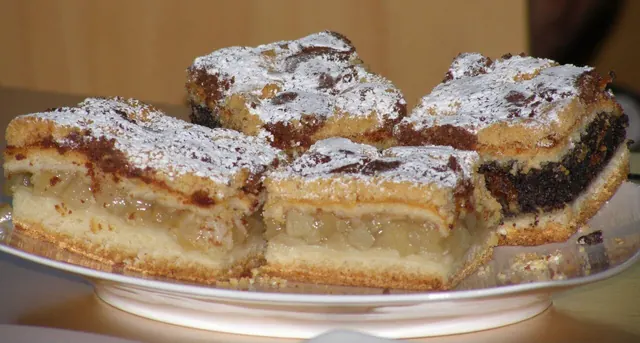
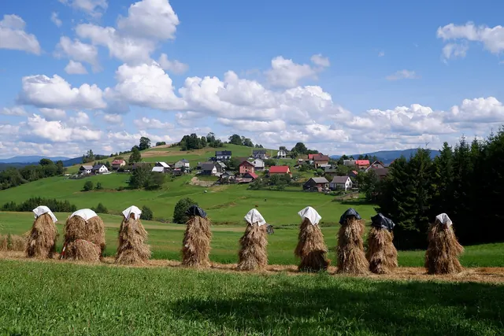
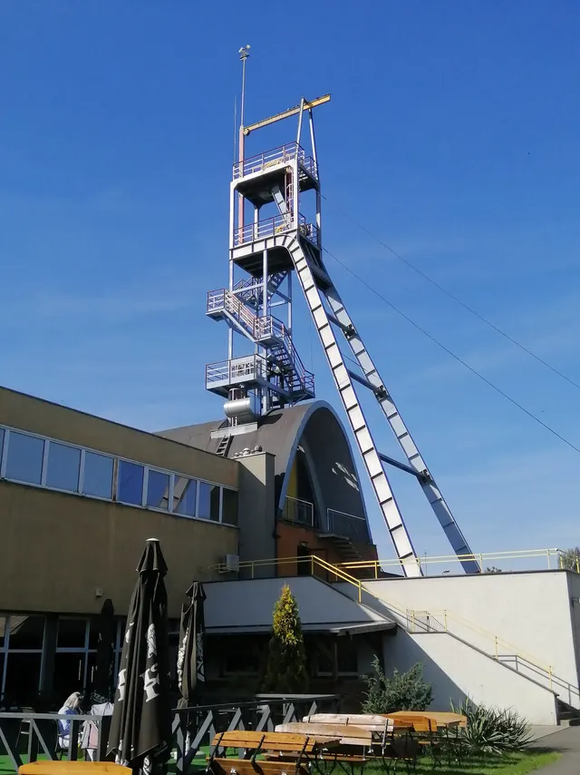
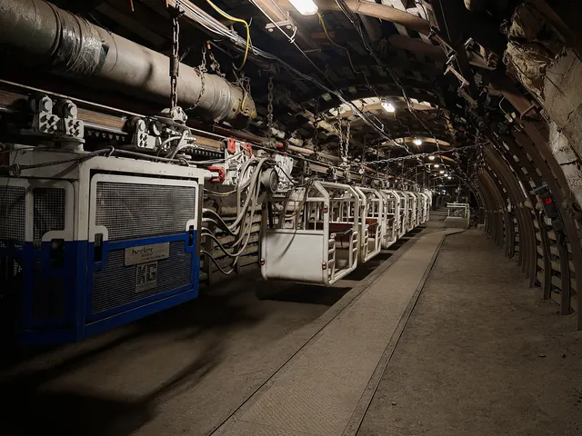
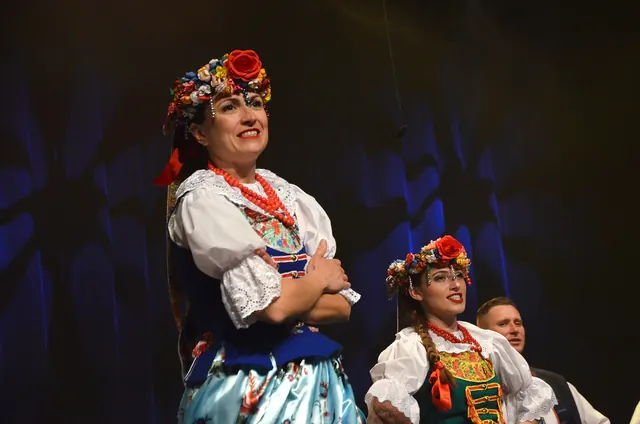
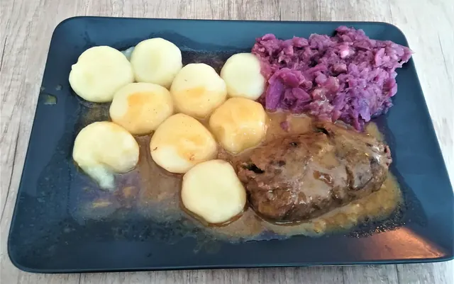
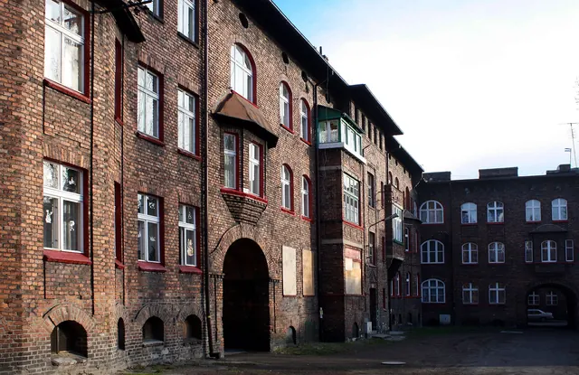

Notre histoire,
et celle de la Silésie
Une épicerie née de l'envie de partager la culture polonaise en Essonne, et le portrait de la région qui lui a donné son nom.
Partager un peu de Pologne en Essonne
Silesia est née en 2024 d'une envie simple : faire vivre, à Morangis, les saveurs, les recettes et les traditions de Pologne.
Son nom rend hommage à la Silésie, Śląsk en polonais, région du sud-ouest de la Pologne à la culture riche et à la cuisine généreuse. Une région de traditions, de fêtes en famille et de tables bien garnies, dont nous souhaitons transmettre l'esprit.
Ici, chacun est le bienvenu : les Polonaises et les Polonais d'Essonne qui veulent retrouver les produits et les goûts de leur enfance, comme les curieux qui découvrent pour la première fois un pierogi, un żurek ou un sernik.
Pour le pain et les gâteaux, nous faisons venir directement de Bytom, en Haute-Silésie, les produits de la boulangerie familiale Kwapisz, fondée en 1937.

Ce qui nous anime
-
Partager une culture
Faire connaître les traditions et la culture polonaises en Essonne, à travers ce qui rassemble le plus : la table.
-
Faire découvrir
Présenter les spécialités culinaires polonaises aux habitants du territoire, conseiller, donner des idées de recettes.
-
Retrouver le goût de la maison
Permettre à la communauté polonaise de retrouver, tout près de chez elle, les produits, les saveurs et les traditions de son pays.
-
Un lieu de proximité
Faire de la boutique un commerce de quartier chaleureux, où l'on vient autant pour échanger que pour faire ses courses.
La Silésie, une région au carrefour de l'Europe
Polonaise, tchèque, allemande, autrichienne, juive… L'histoire de la Silésie est faite d'influences mêlées. C'est cette richesse, partagée entre plusieurs peuples, qui fait aujourd'hui son caractère.
Une région entre l'Oder et les montagnes
La Silésie (Śląsk en polonais, Slezsko en tchèque, Schlesien en allemand) est une région historique d'Europe centrale qui s'étend le long du cours supérieur et moyen de l'Oder (Odra). Aujourd'hui, sa plus grande partie se trouve dans le sud-ouest de la Pologne ; une partie plus petite appartient à la République tchèque, et une petite portion à l'Allemagne, autour de Görlitz.
On y distingue traditionnellement plusieurs ensembles :
- la Basse-Silésie (Dolny Śląsk), au nord-ouest, autour de Wrocław, capitale historique de la région ;
- la Haute-Silésie (Górny Śląsk), au sud-est, autour d'Opole, de Katowice et de Gliwice, longtemps cœur industriel du pays ;
- la Silésie de Cieszyn (Śląsk Cieszyński), partagée depuis 1920 entre la Pologne et l'actuelle Tchéquie.
Les paysages y sont très variés : plaines agricoles de la vallée de l'Oder, massifs des Sudètes où culmine la Śnieżka (1 603 m), et Beskides silésiens, où la Vistule, le grand fleuve polonais, prend sa source.
Repères
- En Pologne
- voïvodies de Basse-Silésie, d'Opole et de Silésie (et une partie de celle de Lubusz)
- En Tchéquie
- autour d'Opava et de Český Těšín
- En Allemagne
- autour de Görlitz
- Grandes villes
- Wrocław, Katowice, Opole, Gliwice, Zabrze, Bytom
À noter : l'actuelle voïvodie de Silésie, autour de Katowice, englobe aussi des territoires qui ne faisaient pas historiquement partie de la Silésie, comme le bassin de Dąbrowa (Zagłębie Dąbrowskie) ou la région de Częstochowa.

Mille ans d'histoire partagée
Au fil des siècles, la Silésie a changé plusieurs fois de souveraineté. Chaque époque y a laissé son empreinte : dans les langues, l'architecture, la religion et, bien sûr, la cuisine.
- Fin du Xe siècle
La Silésie est intégrée à l'État polonais des premiers Piast. En l'an 1000, un évêché est fondé à Wrocław.
- XIIe – XIVe siècle
Une branche de la dynastie, les Piast de Silésie, gouverne une mosaïque de duchés. Des colons venus notamment des pays germaniques fondent de nombreuses villes et villages.
- 1335
Par le traité de Trenčín, le roi de Pologne Casimir III le Grand renonce à ses prétentions sur la Silésie, qui relève désormais de la Couronne de Bohême.
- 1526
Avec la Bohême, la région passe sous l'autorité des Habsbourg d'Autriche.
- 1742
Au terme de la première guerre de Silésie, la Prusse de Frédéric II annexe la majeure partie de la région. Une petite partie méridionale, autour d'Opava et de Cieszyn, reste autrichienne.
- XIXe siècle
La Haute-Silésie devient l'un des grands bassins industriels d'Europe : charbon, zinc, fer et acier transforment les paysages et attirent des milliers de travailleurs.
- 1919 – 1922
Trois insurrections silésiennes et le plébiscite de 1921 précèdent le partage de la Haute-Silésie : sa partie orientale, autour de Katowice, rejoint la Pologne et forme une voïvodie dotée d'une large autonomie et de son propre parlement. En 1920, la Silésie de Cieszyn est divisée entre la Pologne et la Tchécoslovaquie.
- 1945
À l'issue de la Seconde Guerre mondiale, la quasi-totalité de la Silésie est attribuée à la Pologne. Une grande partie de la population allemande est expulsée, tandis que s'installent des Polonais venus notamment des anciennes régions orientales du pays : la société silésienne est profondément transformée.
- Aujourd'hui
Wrocław, Katowice et Opole sont des villes dynamiques, et la Haute-Silésie se réinvente : ses anciens sites industriels deviennent musées, lieux culturels et quartiers de vie.


Charbon, acier et briques rouges
À partir du XVIIIe et surtout du XIXe siècle, la Haute-Silésie se couvre de puits de mine, de hauts fourneaux et de cités ouvrières. Le charbon y a façonné les paysages, la vie quotidienne et la culture pendant plus de deux siècles.
Ce passé est aujourd'hui un patrimoine reconnu et visité :
- la mine historique de plomb, d'argent et de zinc de Tarnowskie Góry et son système souterrain de gestion des eaux sont inscrits au patrimoine mondial de l'UNESCO depuis 2017 ;
- à Zabrze, l'ancienne mine de charbon Guido permet de descendre jusqu'à 320 mètres sous terre pour découvrir le travail des mineurs ;
- à Katowice, la cité ouvrière de Nikiszowiec, construite au début du XXe siècle pour les mineurs et leurs familles, aligne ses familoki, immeubles de brique rouge organisés autour de cours intérieures ;
- la Route des monuments de la technique (Szlak Zabytków Techniki) relie plusieurs dizaines de sites : mines, centrales, brasseries, chemins de fer…
Chaque 4 décembre, la Sainte-Barbe (Barbórka), patronne des mineurs, reste une grande fête : défilés en uniforme d'apparat, orchestres de mineurs et célèbres chapeaux à plumet.
Costumes, chants et fêtes
Les costumes traditionnels silésiens varient d'un terroir à l'autre. Parmi les plus connus figurent celui de la région de Bytom (strój rozbarski), avec ses jupes superposées, ses tabliers et ses foulards, et celui de la Silésie de Cieszyn, réputé pour ses corsages de velours et ses bijoux d'argent ciselé.
La musique et la danse sont portées par de nombreux ensembles folkloriques. Le plus célèbre, l'Ensemble de chants et de danses « Śląsk », fondé en 1953 et installé au château de Koszęcin, fait connaître le folklore polonais dans le monde entier.
Le calendrier reste rythmé par les fêtes religieuses et populaires : la veillée de Noël (Wigilia) et ses plats rituels, la bénédiction des paniers de Pâques (święconka), les fêtes de moisson ou encore la Sainte-Barbe des mineurs.


Une cuisine généreuse et familiale
La cuisine silésienne est une cuisine de partage, nourrissante et pleine de saveurs, marquée par les influences de ses voisins allemands et tchèques. Son grand symbole est le déjeuner du dimanche, qui réunit toute la famille autour de la table.
- Rolada śląska
Roulade de bœuf farcie, mijotée en sauce : la reine du repas dominical.
- Kluski śląskie
Quenelles de pomme de terre reconnaissables à leur petit creux central, idéal pour retenir la sauce.
- Modro kapusta
Le chou rouge braisé qui accompagne la rolada et les kluski.
- Żur śląski
Soupe aigre au levain de seigle, souvent servie avec des pommes de terre ou de la saucisse.
- Krupnioki
Boudin à base de gruau et d'abats, poêlé ou grillé, protégé lui aussi par une indication géographique européenne.
- Wodzionka
Soupe de pain rassis à l'ail, plat modeste emblématique de la cuisine des familles de mineurs.
- Kołocz śląski
Gâteau à pâte levée garni de fromage blanc, de pavot ou de pomme, recouvert de crumble. Protégé depuis 2011 par une indication géographique protégée (IGP) européenne.
- Makówki
Dessert de Noël à base de graines de pavot, de brioche, de fruits secs et de lait.
- Moczka
Compote de Noël épaisse à base de pain d'épices, de fruits secs et de noix.
Une identité singulière
Terre de passages et de frontières mouvantes, la Silésie a forgé une identité régionale forte. Une partie de ses habitants se reconnaît dans une identité silésienne propre, et l'on y parle encore le silésien (ślōnsko godka), dont le statut, dialecte du polonais ou langue régionale, fait l'objet de débats en Pologne.
Cette identité s'exprime dans la langue, la cuisine, la musique, l'architecture des cités ouvrières et un sens de l'accueil auquel les Silésiens sont attachés. Elle se lit aussi dans les symboles : l'aigle d'or sur fond bleu de la Haute-Silésie, l'aigle noir sur fond d'or de la Basse-Silésie.
Pour la Pologne, la Silésie occupe une place majeure. Les insurrections silésiennes de 1919 à 1921 sont un moment important de la mémoire nationale, et le bassin houiller a été pendant des décennies l'un des moteurs économiques du pays.

Envie de goûter la Silésie ?
Passez nous voir à Morangis : nous serons ravis de vous faire découvrir nos produits et de partager quelques recettes.
Nous trouver